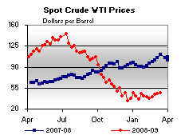

Released on March 18, 2009
(Next Release on March 25, 2009)
That Guy at the End of the Bench
The production of non-crude liquids has traditionally been under-appreciated and sometimes even ignored, much like the treatment accorded to a utility infielder who sits on the bench as the superstar who plays third base and bats cleanup receives all of the attention. However, when that third baseman suffers a season-ending injury, the forgotten utility infielder immediately comes to the forefront. With crude oil (the superstar of the liquid fuels market) ailing, non-crude oil liquids have emerged into the limelight as an important component of world oil supply growth. This development has led EIA to re-evaluate our forecast for non-crude liquids production in the March 2009 Short-Term Energy Outlook (STEO), especially production coming from members of the Organization of the Petroleum Exporting Countries (OPEC). (See Figure 1.)
Non-crude oil liquids are those liquid hydrocarbons that are part of the overall oil supply, but are not crude oil, including such things as condensates, natural gas liquids (NGLs), and biofuels. These other liquids have traditionally been classified as “oil supply” because they are closely linked with the oil sector. Our March STEO re-evaluation of OPEC non-crude liquids production focused on NGLs, which are generally extracted from natural gas at processing plants and constitute the largest portion of OPEC non-crude liquids production. Our re-evaluation specifically focused on the relationship between OPEC NGL and crude oil production. Because much of the natural gas produced in OPEC countries is associated with crude oil, we had already assumed some link between OPEC crude and non-crude production. However, the magnitude of the fall in OPEC crude oil production over the last two quarters, along with the larger relative importance of non-crude liquids in the market today, prompted us to take another look at the nature of this relationship.
Two factors are the most important determinates of the relationship between crude oil and NGL production. In general, natural gas reserves are either “associated,” meaning they occur along with crude oil reserves, or “non-associated,” meaning that they stand alone. Different countries have different levels of this association between crude oil and natural gas reserves. Within OPEC, estimates for the level of association between proven and probable crude oil and natural gas reserves ranges from 90 percent in Algeria to 1 percent in Qatar. The connection between reserves and production is not perfect, but it is an adequate approximation in the absence of detailed natural gas production data.
Second, there is only a relationship between crude oil and NGL production if a country has enough marketing outlets (domestic consumption or exports) for its produced natural gas. If such outlets do not exist, there is no incentive to capture associated natural gas production. In other words, if there is a large difference between gross versus marketed natural gas production, then a cut in crude oil production (and, thereby, in associated natural gas production) would have no impact on NGL production. For example, there was no apparent relationship between falling crude oil production in Saudi Arabia during the 1980s and its NGL production, because the country had been flaring the majority of its gross natural gas production anyway. However, Saudi Arabia currently flares a small part of its natural gas production, indicating that the nature of this relationship has likely changed.
Based on this conceptual framework, we divided OPEC countries into three broad categories. These categories are not exact, and many countries fall near the edge of their classification:
- Countries that did not capture most of their gross natural gas production, which should result in a weak link between crude oil and NGL production (Angola and Ecuador);
- Countries that capture a sizable portion of their associated natural gas production, which should result in a measurable impact on NGL production caused by lower crude oil production (Algeria, Iraq, Kuwait, Nigeria, Saudi Arabia, Venezuela); and,
- Countries that have sizable non-associated natural gas production, which should see a smaller impact upon NGL production because a large share of their natural gas production would be independent of crude oil production (Iran, Libya, United Arab Emirates, and Qatar).
The end result of this analysis was that we reduced our expectations for growth in OPEC non-crude liquids production in 2009 and 2010 by 250,000 barrels per day (bbl/d) and 130,000 bbl/d, respectively, from the February 2009 STEO. These expectations are dependent upon our forecast of OPEC crude oil production over this period, which sees OPEC crude oil output falling by 2.3 million bbl/d in 2009. We still expect sizable growth in OPEC non-crude production over the next two years, because there are numerous new condensate and NGL projects expected to come online that should be independent of any crude oil production decisions. Our forecast assumes that many of these projects will face delays, but there is sufficient new capacity coming online to offset the reduction in non-crude production caused by lower crude output. (See Figure 2.)
Within the context of the overall global oil market, these changes would usually be minor. However, when viewed with our expectation of almost zero growth in non-OPEC supply over the next two years, the effect of this change is magnified. Less overall liquids flowing into the market will tighten the overall oil supply. In addition, lower natural gas production in some OPEC countries could lead to substitution of oil for natural gas in the electric power and industrial sectors, increasing domestic oil demand. Until the superstar returns from the disabled list, the overall condition of the oil market will continue to depend upon these marginal contributors.
Residential Heating Fuel Prices Reach Lowest Levels This Heating Season
Residential heating oil prices decreased for the ninth straight week during the period ending March 16, 2009. The average residential heating oil price shed 2.2 cents per gallon last week to reach 216.0 cents per gallon, a decrease of 169.2 cents per gallon from the same time last year. Wholesale heating oil prices dropped 3.0 cents to reach 128.3 cents per gallon; 203.5 cents per gallon lower than last year at this time.
The average residential propane price decreased for the seventh week in a row to end the survey season, falling 2.3 cents to reach 222.3 cents per gallon. This was a decrease of 37.5 cents compared to the 259.8 cents per gallon average from the same period last year. Wholesale propane prices inched upward by 0.5 cent per gallon, from 72.4 cents to 72.9 cents per gallon. This was a decrease of 90.5 cents per gallon when compared to the March 17, 2008 price of 163.4 cents per gallon.
These prices come from the last survey done for the 2008/09 winter heating season. Weekly retail prices for heating oil and propane will restart for the 2009/10 season beginning in October 2009.
Diesel Prices Drop for the Ninth Week in a Row
The national average price for regular gasoline fell for the first time in three weeks, slipping 3.1 cents to 191.0 cents per gallon. This was 137.4 cents below the price a year. With the exception of the Rocky Mountain region, prices dropped throughout the country. On the East Coast, the price declined 1.1 cents to 190.7 cents per gallon. The largest decrease took place in the Midwest, where the price fell 6.6 cents to 185.2 cents per gallon. The average price on the Gulf Coast shrank 1.1 cents to 180.8 cents per gallon, making the price there the lowest of any region. The only region that experienced an increase in price was the Rocky Mountains, where the price inched up half a cent to 181.9 cents per gallon. The price on the West Coast slid 3.4 cents to 213.4 cents per gallon. The price in California also dropped 3.4 cents to 216.2 cents per gallon.
For the ninth consecutive week, the national average price of diesel fuel fell. Dropping 2.8 cents to 201.7 cents per gallon, the price was 195.7 cents below a year ago. Prices declined throughout the country, with the East Coast falling 2.9 cents to 209.3 cents per gallon but still remaining the highest regional price. The price in the Midwest remained the lowest in the country, despite having the smallest drop of any region; the average there slipped 2.3 cents to 196.5 cents per gallon. The average price in the Gulf Coast and Rocky Mountain regions also slid below $2 a gallon for the first time since February, 2005. In the Gulf Coast, the price fell 3.3 cents to 197.3 cents per gallon while the price in the Rocky Mountains dipped 2.9 cents to 198.8 cents per gallon. The price on the West Coast slipped 2.9 cents to 209.1 cents per gallon, while the California average fell 2.6 cents to 204.9 cents per gallon, 203.4 cents lower than a year ago.
Propane Inventories Continue Seasonal Decline
With only a few weeks remaining in the 2008-09 heating season, propane markets continued to show seasonal declines last week with a 0.6 million-barrel drop that positioned the Nation’s primary supply of propane at an estimated 37.1 million barrels as of March 13, 2008. Moreover, propane inventories remain well ahead of this time last year by nearly 10 million barrels. Regional activity showed mixed inventory movements with a gain reported in the East Coast of 0.6 million barrels, while the Midwest remained relatively unchanged during this same time. The Gulf Coast and combined Rocky Mountain regions reported inventory declines last week measuring 1.1 million barrels and 0.1 million barrels, respectively. Propylene non-fuel use inventories report a gain last week of 0.1 million barrels and accounted for a higher 6.9 percent share of total propane/propylene inventories from the prior week’s 6.6 percent share.
Text from the previous editions of “This Week In Petroleum” is now accessible through a link at the top right-hand corner of this page.
| Retail Prices (Cents Per Gallon) | |||||||
| Retail Data | Changes From | Retail Data | Changes From | ||||
| 03/16/09 | Week | Year | 03/16/09 | Week | Year | ||
| Gasoline | 191.0 | Heating Oil | 216.0 | ||||
| Diesel Fuel | 201.7 | Propane | 222.3 | ||||
| Spot Prices (Cents Per Gallon*) | |||||||||||||||||||||||||||||||||||
|  | |||||||||||||||||||||||||||||||||||
|
|||||||||||||||||||||||||||||||||||
| *Note: Crude Oil WTI Price in Dollars per Barrel. | |||||||||||||||||||||||||||||||||||
| Stocks (Million Barrels) | |||||||
| Stocks Data | Changes From | Stocks Data | Changes From | ||||
| 03/13/09 | Week | Year | 03/13/09 | Week | Year | ||
| Crude Oil | 353.3 | Distillate | 145.5 | ||||
| Gasoline | 215.7 | Propane | 37.104 | ||||